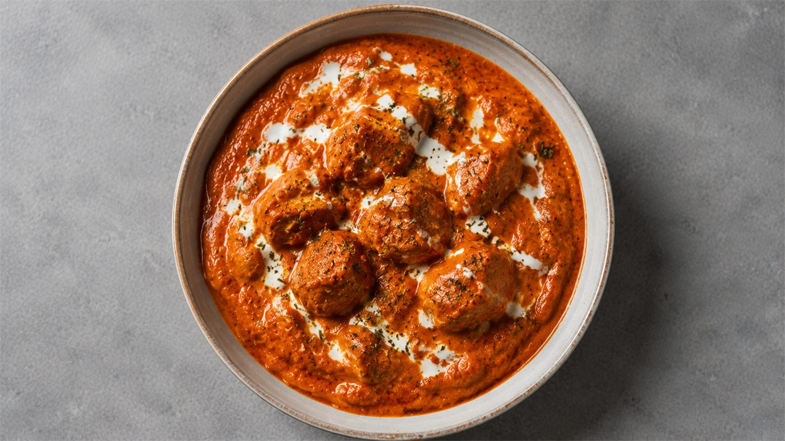

Food Cost Calculator
Where your food cost percentage should land, and how to work it out for any dish on your menu. The free calculator does the arithmetic for anyone who opens it — log in only when you want your costings kept.
Work out your food cost percentage
Enter what one plate costs you to make and what you charge for it. The answer updates as you type. Nothing to install, nothing to sign up for.
Use the price before GST. GST is not your money.
What it costs to cook and serve the dish on top of the ingredients — electricity, gas or LPG, water, packaging — as a percentage of the menu price, not a rupee amount. Most kitchens sit around 4% to 8%. Leave it blank to ignore it; your food cost % stays ingredients only either way, and overhead comes off the profit.
Costing a real recipe — ten ingredients, mixed units, a batch that makes twelve plates? Open the full calculator → It is free, it runs on your phone, and you log in only when you want the costings kept.
Cost your dishes in the calculator
Free for everyone and works on your phone. Cost a dish the moment it opens — an account is only how your dishes get saved.
Open the Food Cost Calculator- Cost as many dishes as you like without an account
- See your food cost % against industry benchmarks
- Install it on your phone and use it in the kitchen
- Log in with a code we email you — then every dish is saved
Free to use. No card, and no sign-up to get started.
What counts as a good food cost?
Where your number should land, and what it is telling you if it does not.
How to work out food cost percentage
Simple enough to do on the back of a docket, and worth doing before you print a menu.
Work from the whole batch, not from one plate. Take each ingredient at the rate you actually buy it, divide by the pack size, then multiply by the quantity the recipe uses. Chicken bought at ₹280 a kilo, with 800 g going into the pot, costs you ₹280 ÷ 1000 × 800 = ₹224 on that line.
- Chicken, 800 g at ₹280/kg₹224
- Basmati rice, 600 g at ₹120/kg₹72
- Curd, onion and tomato, 500 g at ₹70/kg₹35
- Ghee, whole spices and saffron₹49
- Whole batch₹380
- Cost of one plate (₹380 ÷ 4)₹95
- Menu price per plate, before GST₹320
- Food cost (₹95 ÷ ₹320 × 100)29.7%
Add every line to get the batch cost, then divide by the number of plates the batch actually yields. Divide that plate cost by the menu price, multiply by 100, and you have your percentage. Against the bands above, 29.7% is healthy, and it leaves ₹225 a plate towards labour, rent, gas and profit.
Two things quietly ruin the number. Cost what you buy, not what reaches the plate — if 800 g of raw chicken trims down to 600 g cooked, the trim is still money you spent. And re-run the sum whenever a supplier rate moves: chicken going from ₹280 to ₹320 a kilo pushes this dish from 29.7% to 32.2% on its own, and takes ₹8 a plate off what you keep.
The calculator does this arithmetic for every dish you enter, keeps the working, and updates the percentage the moment you change a rate or a price.
Frequently asked questions
It is the money you spend on ingredients, shown as a share of what you charge. If a plate costs you ₹120 to make and you sell it at ₹400, your food cost is 30%. The other 70% pays for staff, rent, gas, electricity and your profit.
In the calculator, enter the rate you buy at — say ₹400 per kg — then how much you actually use, say 1 kg for the batch. It works out the cost of that line for you. You can mix units freely: buy per kg and use grams, buy per litre and use millilitres.
Cost the whole batch — all the chicken, all the butter, everything that goes in the pot — then say how many plates it serves. The calculator divides it and shows the cost of one plate. This is how professional kitchens cost, and it is far more accurate than guessing a single portion.
Not in the food cost itself. Food cost is only the ingredients, and keeping salaries and rent out is what makes the number comparable from dish to dish. Gas and electricity are a little different, because they are spent cooking that particular plate, so the calculator has an optional Overhead % field for them. Enter them as a percentage of the menu price — most kitchens are around 4% to 8% — and it comes off your profit per plate while your food cost percentage stays ingredients only.
Without GST. GST is not your money — you collect it and pass it on. Using the price with GST will make your food cost look better than it really is.
The calculator is free to use without an account. If you are not logged in, your dishes stay in this browser on this device only: we never receive them and cannot see them, and clearing your browser data will remove them. Log in — with a one-time code we email you — and they move to your account, where you can open them on any device. Only your own account can read them, because our database is set up so one account cannot see another account’s dishes.
What a plate of butter chicken really costs
The same worked example in English and in Hindi — ingredient by ingredient in rupees, and the three costing errors that make most food cost numbers wrong.

What Your Butter Chicken Actually Costs You
₹172 of ingredients, four percent of chutney and trim nobody costs, and the five point gap between your recipe card and your P&L.
Read the blog →आपकी बटर चिकन असल में आपको कितने की पड़ती है?
वही हिसाब, हिंदी में। ₹172 के ingredients, चार प्रतिशत चटनी और छीलन, और recipe और P&L के बीच का पाँच प्रतिशत का फ़र्क़।
ब्लॉग पढ़ें →Ready to cost a dish?
Open the calculator and have your first costing in a couple of minutes. Nothing to sign up for.
Open the calculator →Your team can learn to do this every single day
HTI trains kitchen and restaurant teams in costing, portion control and wastage — on your property, in your language.